@SimonHearne
The Psychology of Speed
Simon Hearne
Web Performance Architect
We've all seen the studies...
 |
The BBC loses an additional 10% of users for every additional second it takes to load |
 |
Pinterest improved load time by 40% and saw 15% increase in SEO traffic and 15% increase in conversions |
 |
The Financial times increased user engagement by 30% when they released the new, performance focused FT.com |
Why?
It's all about the wait... and we know a lot about waiting ...
Waiting is frustrating, demoralizing, agonizing, aggravating, annoying, time consuming and incredibly expensive.
Six rules for waiting times
- Unoccupied time feels longer than occupied time
- People want to get started
- Anxiety makes waits seem longer
- Uncertain waits feel longer than known waits
- Unexplained waits feel longer than explained waits
- People will wait longer for more valuable services
1 - Occupying Time
Occupying time on the web
- Show something, fast
- Make it fun!
Fill UX gaps
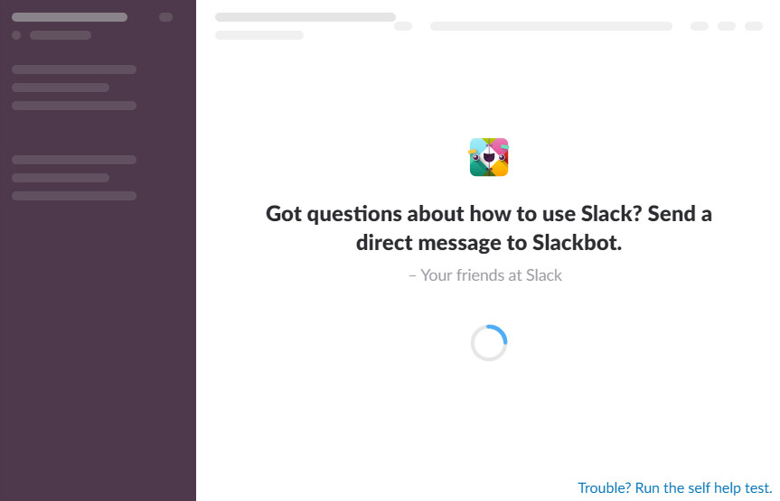
Learn from Games?
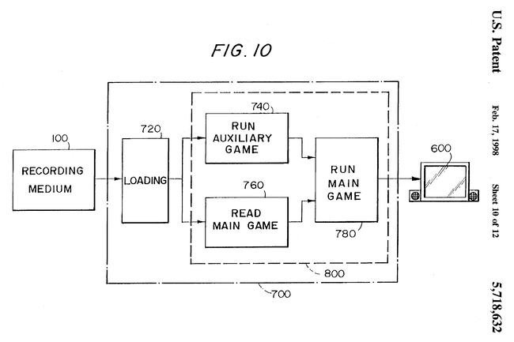Fill UX gaps
Measuring time to occupied
- Time to First Paint
- User perceived times
2 - Getting Started
Getting started on the web
- Prioritise critical content
- Make it fun!
Show what you've got!
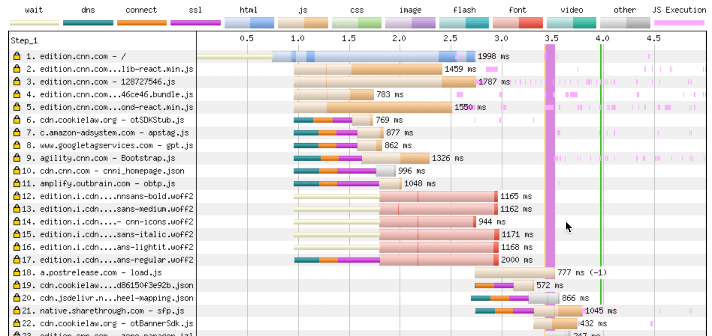Show what you've got!
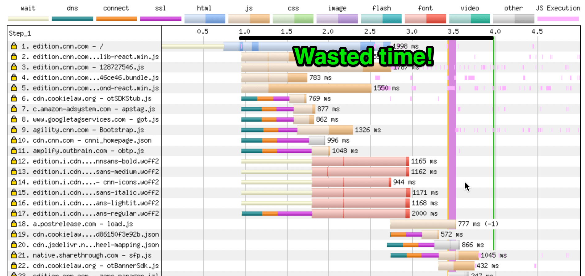Prioritise what matters
Measuring time to start
- Time to Title
- First Contentful Paint
3 - Wait Anxiety
Anxiety on the Web
- Maintain visual stability
- Be optimistic!
Maintaining stability
Optimistic UI (1)
Optimistic UI (1)
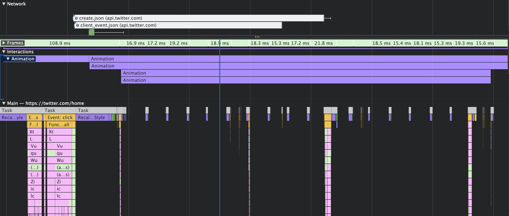Optimistic UI (1)
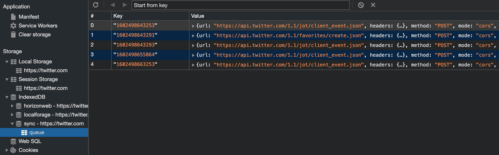Optimistic UI (2)
Reducing wait anxiety
- Avoid layout shifts
- Use optimistic UI patterns
4 - Uncertain Waits
Uncertainty on the web
- Anchor your user
- Give a timeline
- Update every 1,000ms
Site logos are user anchors
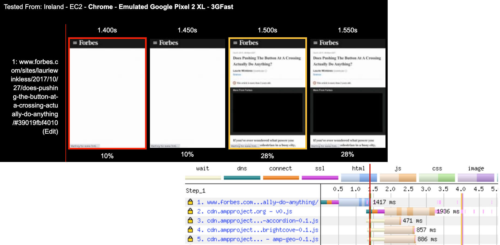Creating certainty on buttons
Provide visual feedback
Reducing wait uncertainty
- Show your logo early
- Give instant interaction feedback
- Use activity indicators
5 - Unexplained Waits
Explaining waits on the web
- Humanise the task
- Give progress indication
Humanise the Task
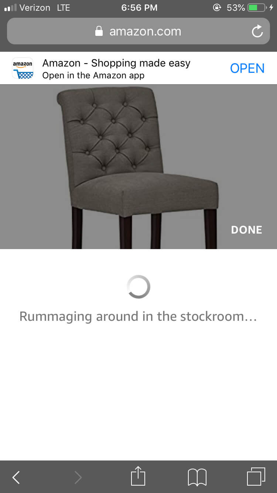Explain the wait
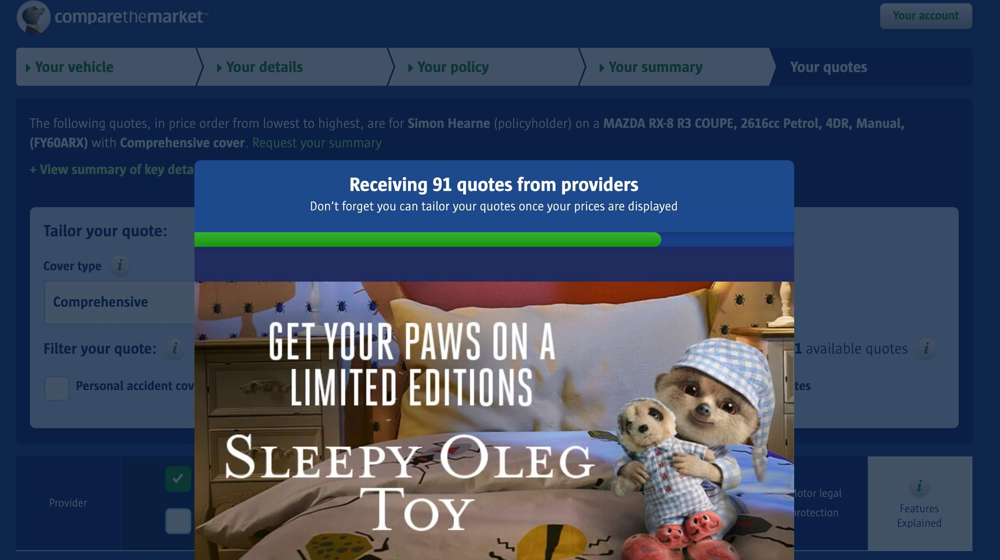Reducing unexplained waits
- Humanise the wait
- Use progress indicators
6 - Valuable Waits
Make long waits feel valuable
- Explain the wait
- Indicate progress
Anticipating waits
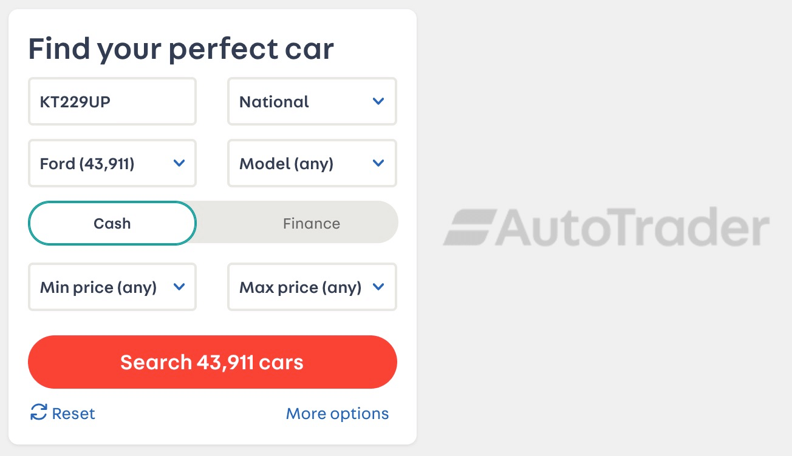Combined wait strategy
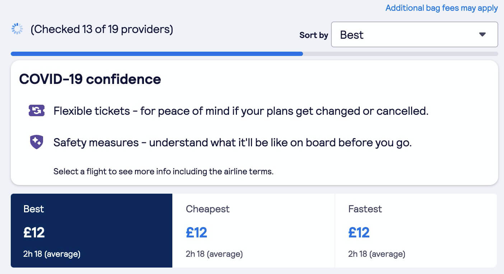Make long waits feel valuable
- Explain the wait
- Indicate progress
Six rules for waiting times
- Occupy user's time
- Let users get started ASAP
- Reduce wait anxiety
- Use progress indication
- Explain long waits
- Describe the value
How do we measure waits?
Web wait types
- Page loads
- In-app Navigations
- User Actions
HCI Principles
- Give feedback within 100ms
- Update every 1,000ms
- Complete actions within 3,000ms
Miller, R. B. (1968). Response time in man-computer conversational transactions.
Layout Shift Impacts Bounce
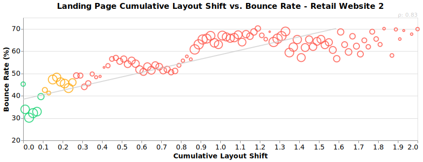Layout Shift Impacts Session Length
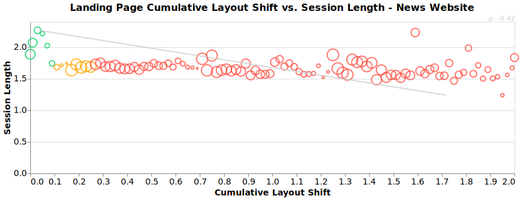Layout Shifts Cause Rage
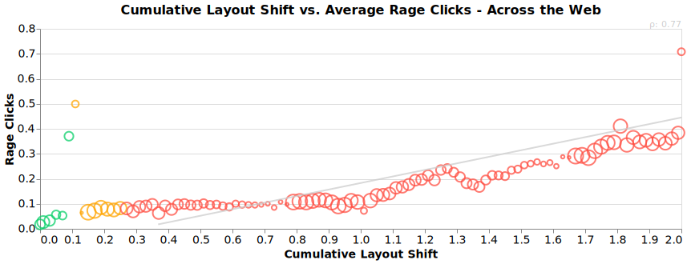Goals for maximum engagement
| Metric | Goal |
|---|---|
| Cumulative Layout Shift | 0.05 |
| First Input Delay | 100ms |
| First Contentful Paint | 1,000ms |
| Largest Contentful Paint | 3,000ms |
| Time To Interactive | 3,500ms |
Based on aggregate data - what are yours?
Top tips for happy users
- Prioritise critical content
- Avoid unexpected layout shifts
- Respond ~immediately to input
this sounds familiar...
Google is measuring these for SEO
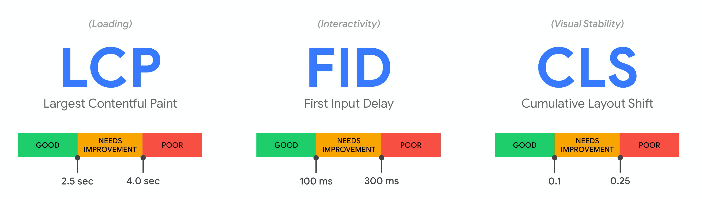Top tips for happy users
- Prioritise critical content
- Avoid layout shifts
- Respond ~immediately to input
- Provide contextual feedback
- Use optimistic patterns
- Explain long waits (>3s)
Top tips for happy developers
- Measure where your customers are
- Measure what matters
- Socialise performance stats
RUM is critical
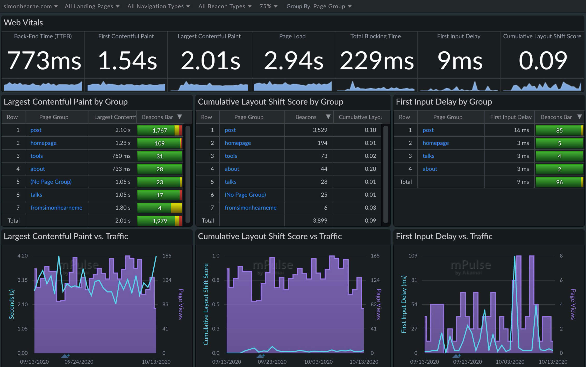Hacking perceived waitsAKA: making waits feel less waity
Anticipate Behaviourcheat with mouse events
| Event | Free Time! |
|---|---|
| touchStart | - |
| mouseOver | - |
| mouseDown | - |
| click | - |
Use to anticipate navigations, product viewer actions etc.
Use skeleton UI with caution 💀
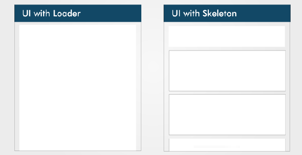Non-linear progress indicators
all | none
The impact of progress indicators on task completion
Use the platform
- Native lazy-loading
- HTML5(!)
- Service Worker
If in doubt, play games!
The Average Webpage Is Now the Size of the Original Doom (2016)